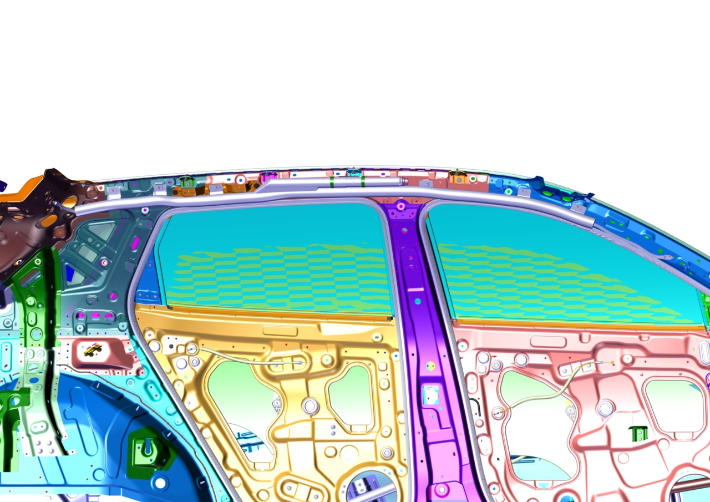

Боковая шторка безопасности
Снятие
-
Снять стойки A, B и C.
Ссылка: главы Снятие и установка узла верхней облицовочной панели стойки A Снятие и установка узла нижней облицовочной панели стойки A Снятие и установка облицовочной панели стойки B Снятие и установка облицовочной панели стойки C
-
Снять обивку потолка.
Ссылка: глава Снятие и установка обивки потолка
-
С помощью маленькой плоской отвертки поддеть вторичный фиксатор электрического разъема и отсоединить электрический разъем Боковая шторка безопасности.

-
Выкрутить крепежные болты газогенератора и подушки Боковая шторка безопасности.
Момент затяжки: 10 ± 1 N.m

Установка
Установка выполняется в порядке, обратном снятию.
Внимание
1. При монтаже сначала установить кронштейн безопасной ручки, а затем модуль боковой шторки безопасности;
2. При монтаже все жгуты проводов и водяные трубки должны располагаться выше модуля боковой шторки безопасности;
3. При монтаже нажать на вторичный фиксатор электрического разъема, убедившись, что он находится в нажатом состоянии;
4. При установке верхней облицовочной панели стойки A убедиться, что крепежные клипсы панели находятся выше модуля шторки безопасности.